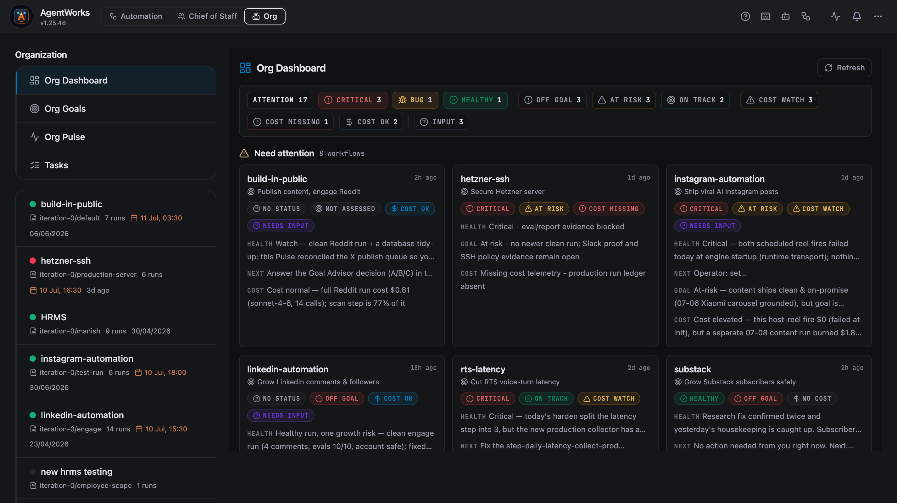
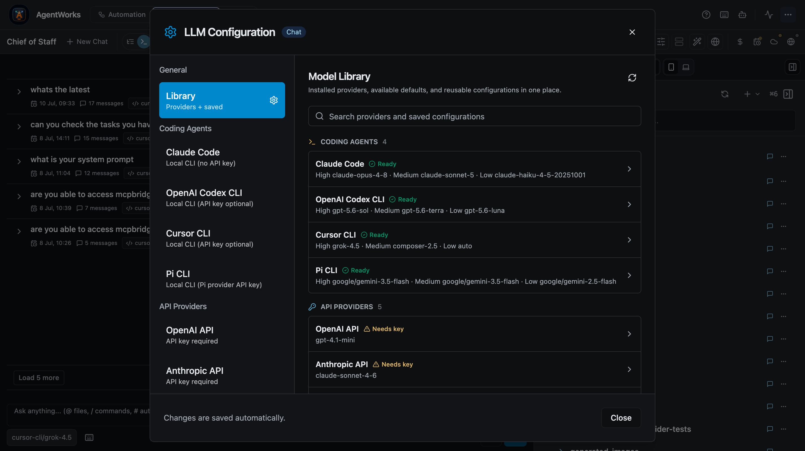
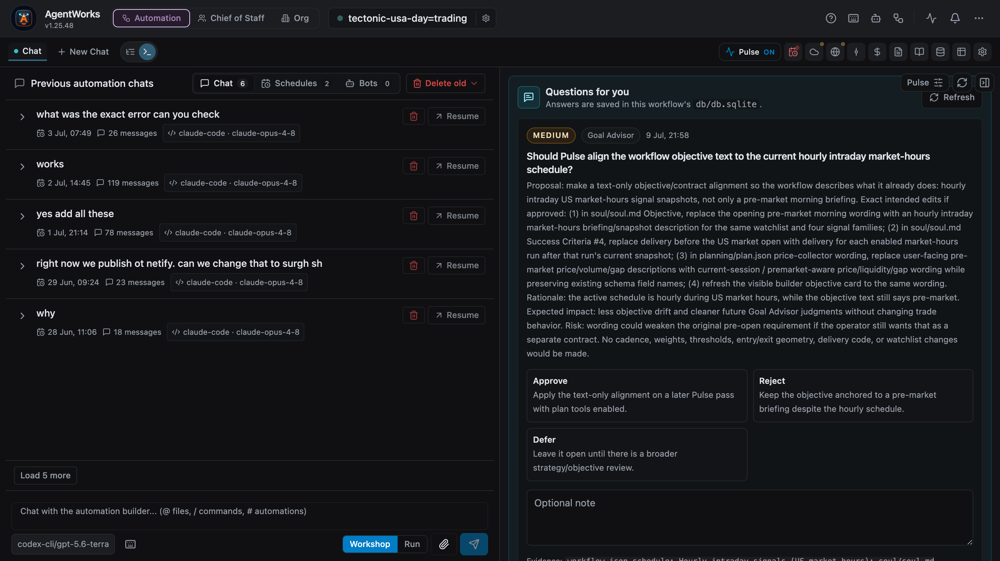
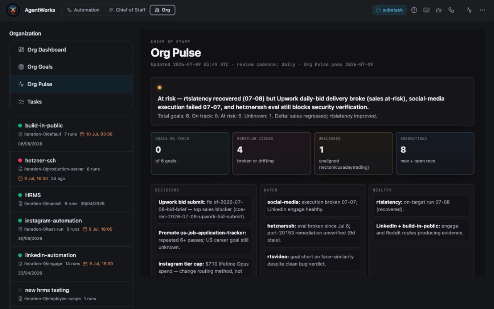
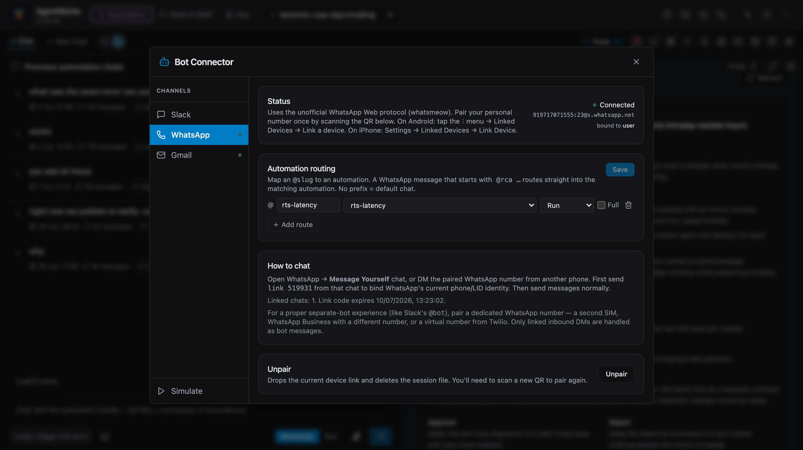

AgentWorks
Run your company with an AI workforce.
Coordinate 100+ agents across engineering, sales, marketing, support, finance, and operations, with shared context, live oversight, and continuous improvement.
- Claude Code
- Codex
- Cursor
- Gemini CLI
- Pi.dev

How AgentWorks works
Agents can do the work. Your company still needs a way to operate it.
AgentWorks gives every agent the right worker, the right context, visible evidence, and a path to improve the next run.
01 / Choose the worker
Use the best agent for each job.
Connect the coding agents, browser workers, MCP tools, and model providers you already use. Route each workflow step to the worker that fits the work.
- Dedicated coding CLIs and model providers
- Browser and MCP tools alongside agent workers
- One operating record, regardless of runtime

Connect the workers you already use. Keep coding CLIs and model providers available from one library.
Choose the right worker inside each workflow. Route high, medium, and low reasoning work independently.

Pulse asks where human judgment matters. The operator can approve, reject, defer, or add guidance before the workflow changes.
Guidance becomes reusable execution context. Shared skills and references carry what worked into future agent runs.
02 / Share company context
Recommendations become context every agent can use.
People contribute goals, guidance, reference material, and corrections. AgentWorks makes that company context available to the agents doing the work, then preserves what successful runs teach the next one.
- Human recommendations and company knowledge
- Shared skills from successful workflow runs
- Context that follows work across departments
03 / Operate by exception
Know where your judgment is needed.
Org Pulse turns hundreds of agent runs into a manageable operating view: goal drift, blocked work, cost pressure, risk, and the next decision that needs a human.
- Company-level health across agent work
- Goals, cost, evidence, risk, and decisions together
- Human review where it changes the outcome

Across the company
One workforce. Every function.
Start with one recurring workflow. Grow into an operating system for the work that repeats across your organization.
- Engineeringcoding agents, tests, releases, infrastructure
- Salesresearch, outreach, pipeline, follow-up
- Marketingcontent, campaigns, reporting, experiments
- Supporttriage, investigation, customer updates
- Financereconciliation, analysis, recurring reporting
- Operationsbriefings, coordination, exception handling
Connected channels
Work starts where your team already works.
Connect the channels people already use, then route every request to the agent workflow built to handle it.
- SlackTeam requests and operational commands
- WhatsAppMobile messages, routing, and approvals
- GmailInbox-driven workflows and follow-up

Start with one workflow
Build the workforce your company can operate.
Book a call to map the first workflow with us, or install the Mac app and start locally.